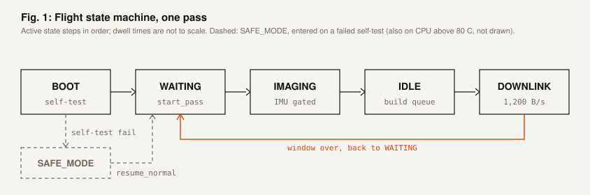
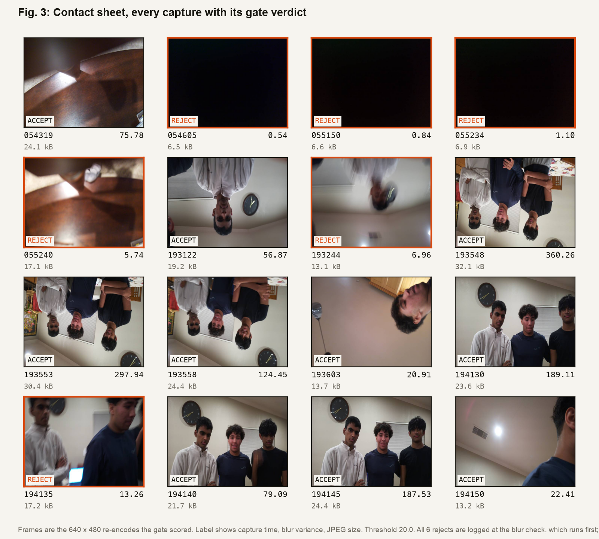
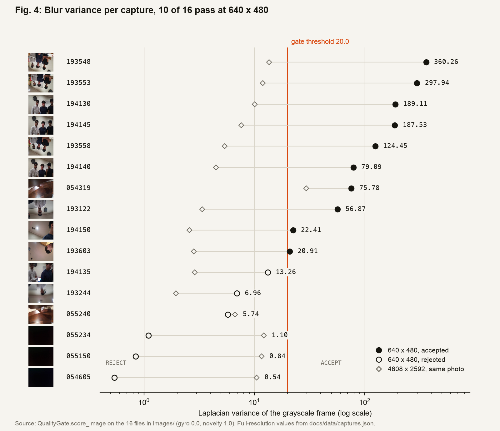
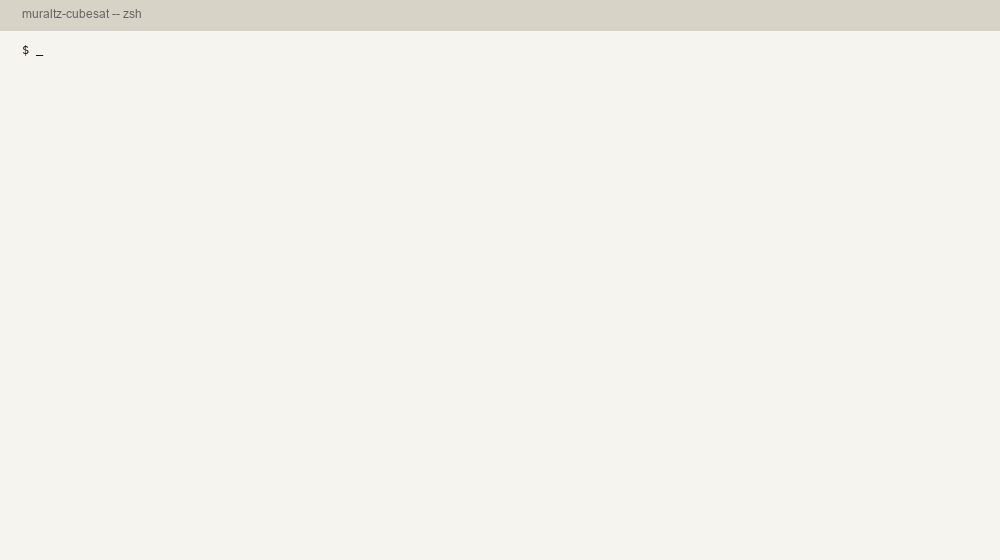
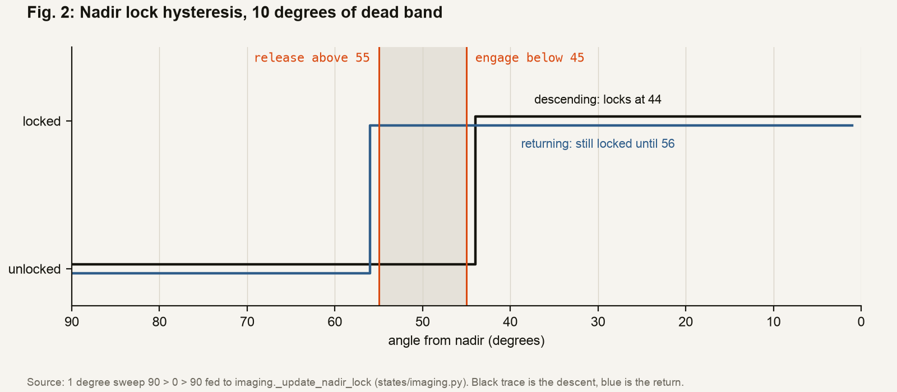
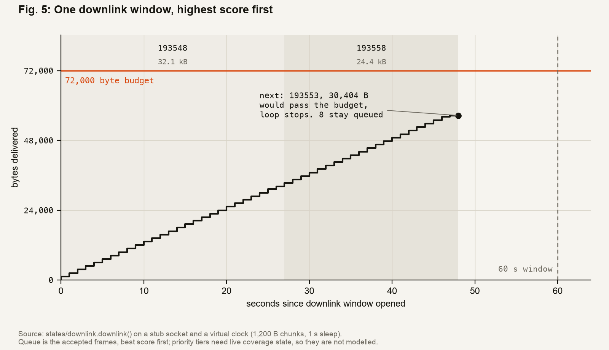
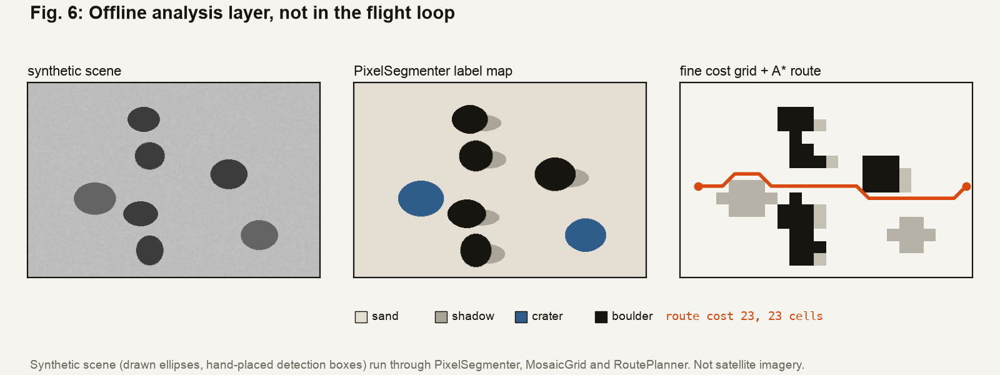

1Overview
The software runs a five-state loop that the operator steps through. It captures only when the spacecraft is pointed at the ground and holding still, scores each frame on board, and downlinks the best frames first over a link slow enough that choosing is mandatory.
| Flight states | 5 | BOOT, WAITING, IMAGING, IDLE, DOWNLINK; SAFE MODE sits outside the loop |
|---|---|---|
| Link rate | 1,200 B/s | matches a 9600 baud radio |
| Pass budget | 72,000 B | one 60 s downlink window |
| Captures accepted | 10 / 16 | at 640 × 480, scored by the repo's own gate |
1.1Hardware

2Flight logic
2.1State machine
Select a state for what it does and the numbers that bound it. Run a pass to step the cycle; durations are the configured maximums played back faster than real time.
Panel A · State machine
2.2Quality gate
Sixteen test shots from the rig, each resized to the flight camera's 640 × 480, JPEG-encoded as the camera code does, and run through QualityGate.score_image. Gyro is 0.0 and novelty 1.0 because no IMU or coverage grid was attached. Pick a capture to see its numbers against the thresholds.
Panel B · Quality gate
Source: processing/quality.py. Data: data/captures.json.



2.3Imaging gate
Two conditions, both required. Nadir lock engages under 45° and holds until the angle passes 55°, so the camera does not flicker at the boundary. The gyro rate must stay under 1.0 rad/s.
Panel C · Imaging gate
Source: states/imaging.py, thresholds in config.py. The lock starts released each pass.

2.4Downlink
The link is throttled to 1,200 B/s, so a 60 s window carries at most 72,000 B. The queue sends P1, then P2, then P3, and stops at the first image that does not fit. The real code sleeps one second per chunk; this plays it back faster. The queue is the six best accepted captures with their real 640 × 480 JPEG sizes, ranked by combined score. The P1/P2/P3 labels are illustrative: real tiers need a live coverage grid.
Panel D · Downlink
- Link time
- 0 / 60 s
- Bytes sent
- 0 / 72,000
- Images down
- 0
Loading queue.
Source: states/downlink.py, comms/transfer.py

3Supporting systems
Three background systems run beside the state machine. Full write-up in docs/ARCHITECTURE.md.
| System | Behavior | Numbers | Source |
|---|---|---|---|
| Watchdog | A daemon thread. If the main loop stops petting it for 30 s, it saves recovery state and restarts the process with os.execv. Downlink pets it every chunk so a long transfer is not mistaken for a hang. | timeout 30 s check every 5 s |
utils/watchdog.py |
| Thermal | CPU temperature is read from sysfs. Above 70 C the capture interval doubles. Above 80 C the spacecraft drops to safe mode: camera off, no imaging or downlink, commands still accepted. | warning 70 C critical 80 C check every 10 s |
utils/thermal.py states/safe_mode.py |
| Command listener | A daemon thread on a TCP port reads newline-delimited JSON from the ground station. Known commands go into a thread-safe queue the state machine drains at safe points. Anything else is NACKed. | port 5001 11 commands |
comms/command_listener.py |
4Limits
| Blur threshold | 20.0 is an uncalibrated placeholder, flagged as such in config.py. Laplacian variance depends on image resolution, so the right value has to be set against the real imaging surface. |
|---|---|
| No yaw | The IMU has no magnetometer. The software tracks pitch and roll for nadir pointing but not yaw. |
| Wi-Fi, not UHF | Wi-Fi stands in for a flight radio. The 1,200 B/s throttle reproduces the rate of a 9600 baud link. |
| Offline analysis | Terrain segmentation and route planning exist in the repo and run in tests. They are not wired into the flight loop. |
